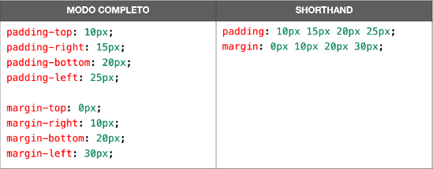
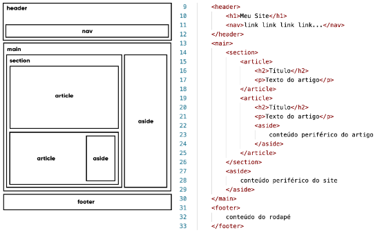

Preenchimento e margem personalizados
Todo elemento de caixa possui 4 valores para padding e 4 para margin, na seguinte ordem: superior (-top), direita (-right), inferior (-bottom),
esquerda (-left). Quando colocamos um único valor de dimensão para o preenchimento ou margem ele é aplicado para todas as direções, mas também podemos fazer o seguinte:

Você também pode indicar cada shorthand das propriedades de preenchimento e borda, se quiser, usando apenas duas medidas:

Só é possível fzr isso quando as medidas -top e -bottom forem iguais entre si e o mesmo também ocorrer entre as medidas -right e -left.
Margens no automático
Consiste na centralização dos blocos, você pede para o navegador calcular automaticamente as margens da esquerda e direita para o bloco ficar no meio.
Basta você fazer a seguinte declaração:
margin:auto
Tipos de Caixa
Dependendo do comportamento da caixa ela pode classificar ela em uma de duas categorias:
Caixa do tipo block-level
Sempre vai iniciar em uma nova linha e vai ocupar a largura total do elemento onde ele está contido. Se não estiver contido em nenhuma outra caixa ele vai ocupar 100% da largura do <body>.
Os elementos mais conhecido dessa categoria é o <div> e suas variações semânticas da HTML5, como <main>, <section>, <aside>, etc.
Na lista a seguir, tem alguns elementos block-level:
<address> <article> <aside> <blockquote> <canvas> <dd>
<div> <dl> <dt> <fieldset> <figcaption> <figure>
<footer> <form> <h1> - <h6> <header> <hr> <li>
<main> <nav> <noscript> <ol> <p> <pre>
<section> <table> <tfoot> <ul> <video>
Caixa do tipo inline-level
Um elemento do tipo inline-level, não vai começar em uma nova linha e sim no ponto exato onde foram definidos. Sua largura ocupa apena o tamanho relativo ao conteúdo, alguns dos mais usados pela HTML:
<a> <abbr> <acronym> <b> <bdo> <br>
<button> <cite> <code> <dfn> <em> <i>
<img> <input> <kbd> <label> <map> <object>
<iutput> <q> <samp> <script> <select> <small>
<span> <strong> <sub> <textarea> <tt> <var>
Grouping Tags e Semantic Tags
Com o surgimento da HTML5 surgiram as tags semânticas de agrupamento. Mas a <div> (block-level) e <span> (inline-level) deixaram de existir, é só que seu uso tem menos sentido. Pois temos
tags para dividir partes do nosso documento HTML.
A seguir os principais agregadores semânticos:
Header
Cria áreas relativas a cabeçalhos. Pode ser qualquer cabeçalho, normalmente inclui títulos do h1 ao h6 e subtítulos. Podem conter menus de navegação.
Nav
Define uma área que possui os links de navegação pela estrutura de páginas que vão compor o website. Essa tag pode estar dentro de um <header>.
Main
Usado para delimitar o conteúdo principal do site. Normalmente contém as seções, artigos e conteúdos periféricos.
Section
Cria seções para sua página. Pode conter conteúdos diretamente nela ou dividir eles em artigos com conteúdos específicos. Segundo W3C "uma seção é um agrupamento temático de conteúdos, tipicamente com um cabeçalho".
Article
Elemento que vai conter um conteúdo para ser lido de forma independente e diz respeito ao mesmo assunto que o resto do site. Pode ser usado para delimitar um post de blog/fórum, uma notícia, etc.
Aside
Delimita um conteúdo périférico e complementar ao conteúdo principal de um artigo ou seção. Normalmente fica posicionado ao lado de certo texto ou até mesmo no meio dele, exatamente como fizemos no bloco de texto apresentado anteriormente, falando sobre "MÚLTIPLOS NÍVEIS".
OBS: Sua criatividade e planejamento vão definir a estrutura de seu site. Você pode colocar mais de um article dentro de uma section ou até mesmo o oposto.
Footer
Cria um rodapé para o site, seção ou artigo. é um conteúdo que não faz parte diretamente do conteúdo nem é um conteúdo periférico (o que caracteriza um aside), mas possui informações sobre autoria do conteúdo, links adicionais, mapa do site, documentos relacionados.
A seguir está uma proposta de estrutura para um site:

Analise a imagem e o código acima. Veja a hierarquia entre os elementos e quais deles estão dentro um do outro.